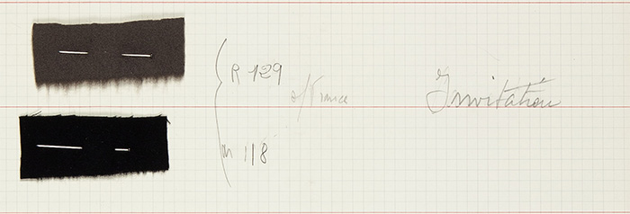
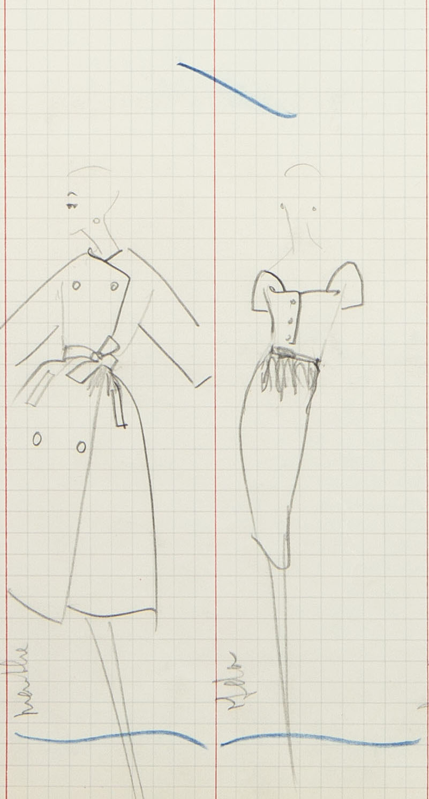

Chart
Each chart recorded the designs in a collection by type, who made it, for whom, and with textile swatches. This ensured the ateliers’ work was evenly distributed and that the mannequins had time to change during daily presentations.
Dior Héritage Collection, Paris



Christian Dior’s mannequin, France, was the tallest in Paris (1.9 m / 6’3”)
© Association Willy Maywald / ADAGP, Paris / SODRAC, Montreal (2017)

 *
*
This ensemble was worn by Hannah Walker, wife of Alvin Walker, President of Holt Renfrew, who secured the licence to the Canadian rights to sell Christian Dior products.
The skirt attaches to the bodice with hooks and eyes – like 19th-century two-piece dresses.
* Photos Laziz Hamani
 *
*

 *
*
The three-panel skirt uses the selvedge to reduce finishing. The selvedge is woven with the name of the textile GEROLAINE.